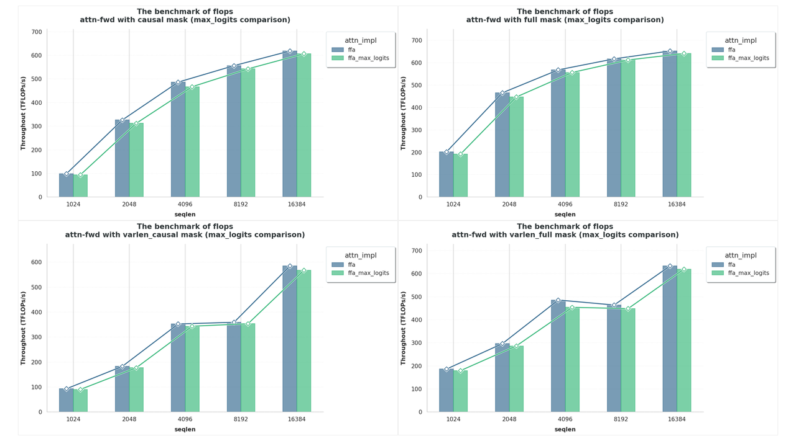

支持 Muon QK-Clip#
引言#
Muon 优化器 [Jordan et al., 2024] 利用矩阵正交化，在较小的语言模型上展现了比传统优化器（如 Adam [Kingma and Ba, 2017, Loshchilov and Hutter, 2019]）更快的收敛速度，随后被 Kimi [Liu et al., 2025] 证明可以扩展到大型模型。
为缓解扩展 Muon 时的训练不稳定性，Kimi 提出了若干理论驱动的技术 [Liu et al., 2025, Team et al., 2026]；其中，来自 Kimi K2 [Team et al., 2026] 的 QK-Clip 方法对于防止注意力 logits 爆炸导致的损失尖峰和发散至关重要。
QK-Clip 需要跟踪整个注意力矩阵 \(S := QK^\mathrm T\) 上的最大注意力 logits（max_logits），这并非易事，因为基于 Flash Attention 的实现通常为了内存效率而避免物化完整的注意力矩阵 [Dao, 2023, Dao et al., 2022]。这一挑战在具有上下文并行（CP）的分布式设置中更加复杂，其中注意力矩阵可能被分布在多个 CP rank 上。
我们通过在 Flex-Flash-Attention（FFA）的内核级别和 MagiAttention 的分布式级别同时添加对（分布式）Muon QK-Clip 的原生支持来应对这些挑战，并在下方展示简洁的 API、实现细节和实验结果。
用户接口#
此前，flex_flash_attn_func 和 calc_attn 的 API 遵循 Flash Attention 风格，返回 (out, lse) 元组。为了支持（分布式）Muon QK-Clip 以及未来可能的其他特性，我们将接口泛化为返回 (out, meta) 元组，其中 meta 是数据类 AttnForwardMeta 的实例，包含在核心注意力前向传播之外有用但不易获取的字段，如 lse 和 max_logits。
如以下代码片段所示，通过这种返回类型，您可以方便地通过 meta.lse 访问原始 lse 张量，并在设置参数 return_max_logits=True（默认为 False 以返回 None）时可选地通过 meta.max_logits 访问最大 logits 张量。这种基于 meta 的设计允许为新特性添加新字段而不破坏现有代码。
警告
首次启用 return_max_logits=True 将触发即时（JIT）编译，因为它未包含在 FFA 的预构建内核中，这可能会导致一次性延迟。后续调用将使用缓存的内核并以全速运行。
有关 FFA 中 JIT 编译的更多详情，请参阅单独的博客文章。
对于
flex_flash_attn_func：out, meta = flex_flash_attn_func( q, k, v, q_ranges, k_ranges, attn_type_map, return_max_logits=True ) lse = meta.lse # shape = (seqlen_q, num_heads_q), dtype=float32 max_logits = meta.max_logits # shape = (num_heads_q,), dtype=float32, or None if return_max_logits=False
对于
calc_attn：out, meta = calc_attn( q, k, v, key, return_max_logits=True ) local_lse = meta.lse # shape = (local_seqlen_q, num_heads_q), dtype=float32 global_max_logits = meta.max_logits # shape = (num_heads_q,), dtype=float32, or None if return_max_logits=False
实现#
FFA 中的内核级实现#
要计算最大注意力 logits：
在 FFA 前向内核中为每个注意力头使用灵活注意力掩码时，我们采用两级归约策略：
块内归约：在每个 CUDA block 内，每个 worktile epilogue 之后，线程执行线程级归约以计算其分配行上的
max_logits。Warp 级 shuffle 归约聚合每个 warp 的最大值，每个 warp 中的第一个 lane 使用无锁原子最大值原子更新共享缓冲区smem_max_logits[head_q_idx]。在PackGQA模式下，多个 query 头共享 key-value 头，每行的最大值直接原子写入对应的smem_max_logits[head_q_idx]。块间归约：当一个 block 处理完所有 worktile 后，线程同步以确保块内归约完成，从共享内存读取 block 级归约的
max_logits，乘以softmax_scale以与缩放注意力分数保持一致，并原子更新全局缓冲区gmem_max_logits[head_q_idx]。内存分配：每个 block 分配一个大小为注意力头数的共享缓冲区
smem_max_logits（目前限制最多128），初始化为-inf。全局缓冲区gmem_max_logits形状为(num_heads_q,)，数据类型为float32，同样初始化为-inf。原子最大值：更新使用无锁比较交换原子最大值，以确保跨线程和 block 的线程安全无锁更新。如果已存在更大的值，更新线程可以立即退出，最小化争用。
MagiAttention 中的分布式级实现#
要从每个 CP rank 在每个阶段计算的部分结果中计算全局最大注意力 logits：
我们同样需要采用两级归约策略：
阶段间归约：在每个 CP rank 上，分配一个每 rank 的累积缓冲区
partial_max_logits，并将其传入每个阶段的FFA前向内核，以累积每个注意力头的阶段级max_logits。rank 间归约：阶段累积完成后，跨 CP rank 执行
reduce_op=max的AllReduce，以获得最终的global_max_logits，并将其写入calc_attn返回值中的meta.max_logits供用户访问。
实验#
我们对启用 max_logits 的 FFA 与原始实现（未启用）进行了基准测试，涵盖 full、causal 和 varlen full/causal 掩码模式，序列长度最高可达 16k。
如下方 图 70 所示，启用 max_logits 后的吞吐量与基线接近：full 和 causal 掩码大约有 1%~2.5% 的开销，更具挑战性的 varlen full/causal 情况约为 2%~3.5%，表明计算和返回 max_logits 对运行时的影响可忽略不计。
{kind=link}

图 70 启用 max_logits 的 FFA 与原始实现（未启用）在 full、causal 和 varlen full/causal 掩码模式下的基准测试结果，序列长度最高可达 16k。#
引用#
如果您发现 MagiAttention 对您的研究有用，请引用：
@misc{magiattention2025,
title={MagiAttention: A Distributed Attention Towards Linear Scalability for Ultra-Long Context, Heterogeneous Mask Training},
author={Zewei, Tao and Yunpeng, Huang},
year={2025},
howpublished={\url{https://github.com/SandAI-org/MagiAttention/}},
}
参考文献#
Tri Dao. Flashattention-2: faster attention with better parallelism and work partitioning. arXiv preprint arXiv:2307.08691, 2023.
Tri Dao, Dan Fu, Stefano Ermon, Atri Rudra, and Christopher Ré. Flashattention: fast and memory-efficient exact attention with io-awareness. Advances in Neural Information Processing Systems, 35:16344–16359, 2022.
Keller Jordan, Yuchen Jin, Vlado Boza, Jiacheng You, Franz Cesista, Laker Newhouse, and Jeremy Bernstein. Muon: an optimizer for hidden layers in neural networks. 2024. URL: https://kellerjordan.github.io/posts/muon/.
Diederik P. Kingma and Jimmy Ba. Adam: a method for stochastic optimization. 2017. URL: https://arxiv.org/abs/1412.6980, arXiv:1412.6980.
Jingyuan Liu, Jianlin Su, Xingcheng Yao, Zhejun Jiang, Guokun Lai, Yulun Du, Yidao Qin, Weixin Xu, Enzhe Lu, Junjie Yan, Yanru Chen, Huabin Zheng, Yibo Liu, Shaowei Liu, Bohong Yin, Weiran He, Han Zhu, Yuzhi Wang, Jianzhou Wang, Mengnan Dong, Zheng Zhang, Yongsheng Kang, Hao Zhang, Xinran Xu, Yutao Zhang, Yuxin Wu, Xinyu Zhou, and Zhilin Yang. Muon is scalable for llm training. 2025. URL: https://arxiv.org/abs/2502.16982, arXiv:2502.16982.
Ilya Loshchilov and Frank Hutter. Decoupled weight decay regularization. 2019. URL: https://arxiv.org/abs/1711.05101, arXiv:1711.05101.
Kimi Team, Yifan Bai, Yiping Bao, Y. Charles, Cheng Chen, Guanduo Chen, Haiting Chen, Huarong Chen, Jiahao Chen, Ningxin Chen, Ruijue Chen, Yanru Chen, Yuankun Chen, Yutian Chen, Zhuofu Chen, Jialei Cui, Hao Ding, Mengnan Dong, Angang Du, Chenzhuang Du, Dikang Du, Yulun Du, Yu Fan, Yichen Feng, Kelin Fu, Bofei Gao, Chenxiao Gao, Hongcheng Gao, Peizhong Gao, Tong Gao, Yuyao Ge, Shangyi Geng, Qizheng Gu, Xinran Gu, Longyu Guan, Haiqing Guo, Jianhang Guo, Xiaoru Hao, Tianhong He, Weiran He, Wenyang He, Yunjia He, Chao Hong, Hao Hu, Yangyang Hu, Zhenxing Hu, Weixiao Huang, Zhiqi Huang, Zihao Huang, Tao Jiang, Zhejun Jiang, Xinyi Jin, Yongsheng Kang, Guokun Lai, Cheng Li, Fang Li, Haoyang Li, Ming Li, Wentao Li, Yang Li, Yanhao Li, Yiwei Li, Zhaowei Li, Zheming Li, Hongzhan Lin, Xiaohan Lin, Zongyu Lin, Chengyin Liu, Chenyu Liu, Hongzhang Liu, Jingyuan Liu, Junqi Liu, Liang Liu, Shaowei Liu, T. Y. Liu, Tianwei Liu, Weizhou Liu, Yangyang Liu, Yibo Liu, Yiping Liu, Yue Liu, Zhengying Liu, Enzhe Lu, Haoyu Lu, Lijun Lu, Yashuo Luo, Shengling Ma, Xinyu Ma, Yingwei Ma, Shaoguang Mao, Jie Mei, Xin Men, Yibo Miao, Siyuan Pan, Yebo Peng, Ruoyu Qin, Zeyu Qin, Bowen Qu, Zeyu Shang, Lidong Shi, Shengyuan Shi, Feifan Song, Jianlin Su, Zhengyuan Su, Lin Sui, Xinjie Sun, Flood Sung, Yunpeng Tai, Heyi Tang, Jiawen Tao, Qifeng Teng, Chaoran Tian, Chensi Wang, Dinglu Wang, Feng Wang, Hailong Wang, Haiming Wang, Jianzhou Wang, Jiaxing Wang, Jinhong Wang, Shengjie Wang, Shuyi Wang, Si Wang, Xinyuan Wang, Yao Wang, Yejie Wang, Yiqin Wang, Yuxin Wang, Yuzhi Wang, Zhaoji Wang, Zhengtao Wang, Zhengtao Wang, Zhexu Wang, Chu Wei, Qianqian Wei, Haoning Wu, Wenhao Wu, Xingzhe Wu, Yuxin Wu, Chenjun Xiao, Jin Xie, Xiaotong Xie, Weimin Xiong, Boyu Xu, Jinjing Xu, L. H. Xu, Lin Xu, Suting Xu, Weixin Xu, Xinran Xu, Yangchuan Xu, Ziyao Xu, Jing Xu, Jing Xu, Junjie Yan, Yuzi Yan, Hao Yang, Xiaofei Yang, Yi Yang, Ying Yang, Zhen Yang, Zhilin Yang, Zonghan Yang, Haotian Yao, Xingcheng Yao, Wenjie Ye, Zhuorui Ye, Bohong Yin, Longhui Yu, Enming Yuan, Hongbang Yuan, Mengjie Yuan, Siyu Yuan, Haobing Zhan, Dehao Zhang, Hao Zhang, Wanlu Zhang, Xiaobin Zhang, Yadong Zhang, Yangkun Zhang, Yichi Zhang, Yizhi Zhang, Yongting Zhang, Yu Zhang, Yutao Zhang, Yutong Zhang, Zheng Zhang, Haotian Zhao, Yikai Zhao, Zijia Zhao, Huabin Zheng, Shaojie Zheng, Longguang Zhong, Jianren Zhou, Xinyu Zhou, Zaida Zhou, Jinguo Zhu, Zhen Zhu, Weiyu Zhuang, and Xinxing Zu. Kimi k2: open agentic intelligence. 2026. URL: https://arxiv.org/abs/2507.20534, arXiv:2507.20534.